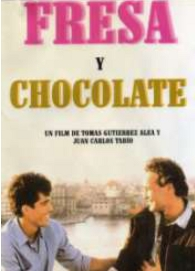

| Date, Time & Location | Sat 13 Mar 2010, Film: 12.00, Seminar 2-5pm |
|---|---|
| Details | 'Fresa y Chocolate' (Strawberries and Chocolate), a pathbreaking and acclaimed Cuban film exploring homosexuality and homophobia, will be screened at 12.00, followed by a public seminar with Steve Wilkinson, former editor of 'Cuba Sí' and expert on contemporary Cuban fiction.  Refreshments available Venue: St Matthew's Rooms, (St Matthew's Church) Carver St, Sheffield S1 4FE The Cuba Solidarity Campaign website |